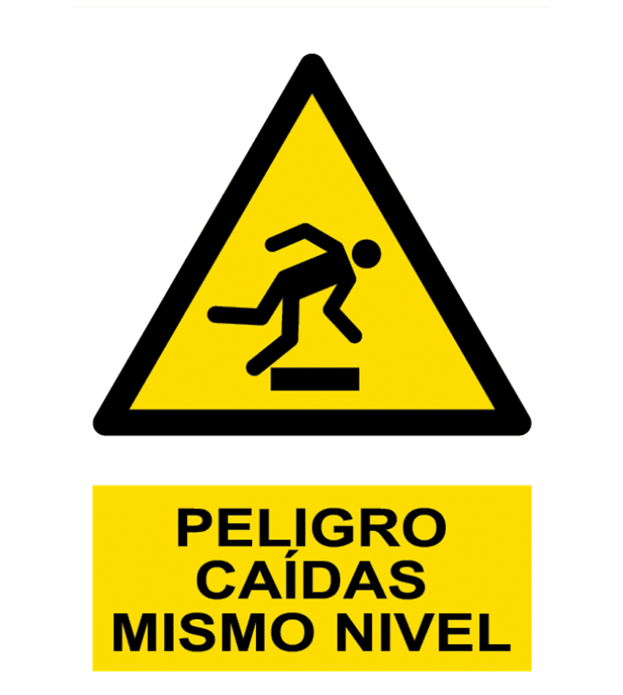
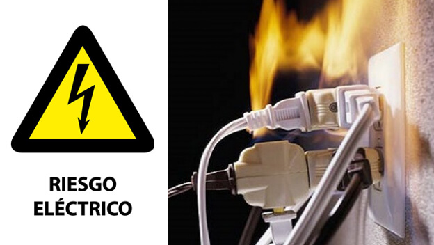
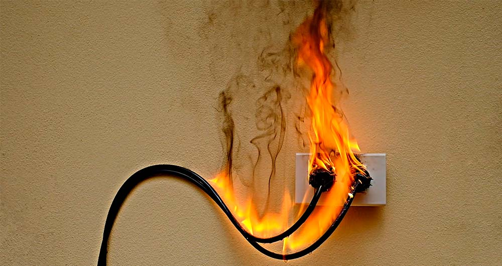
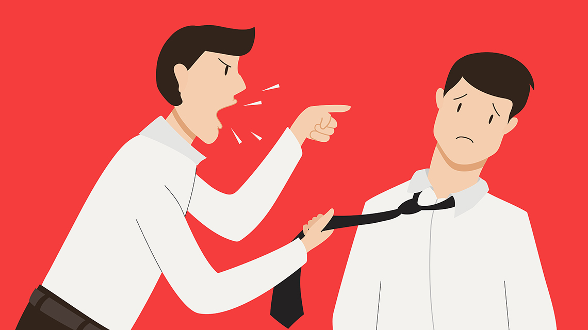
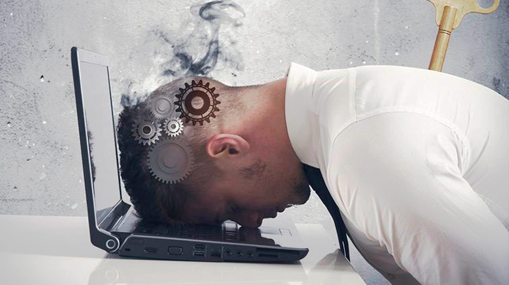
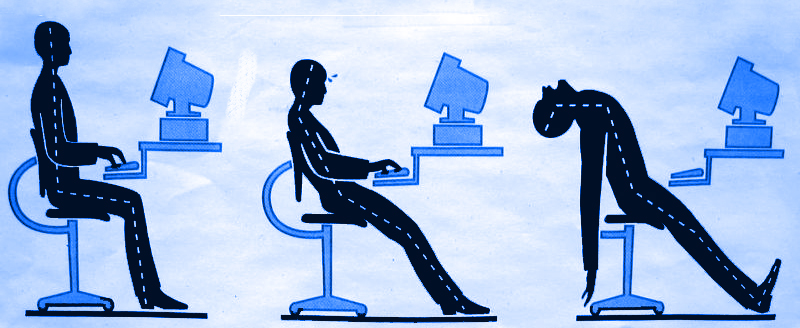
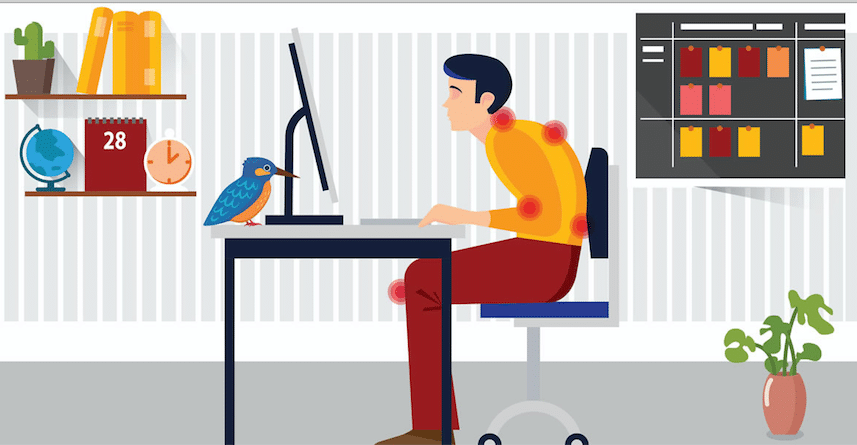
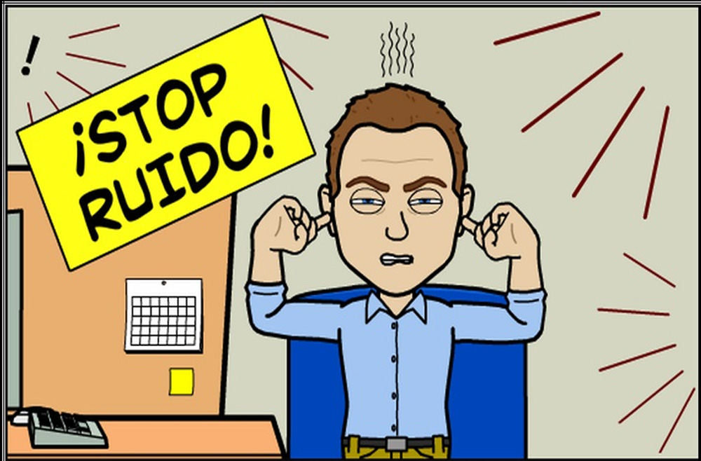
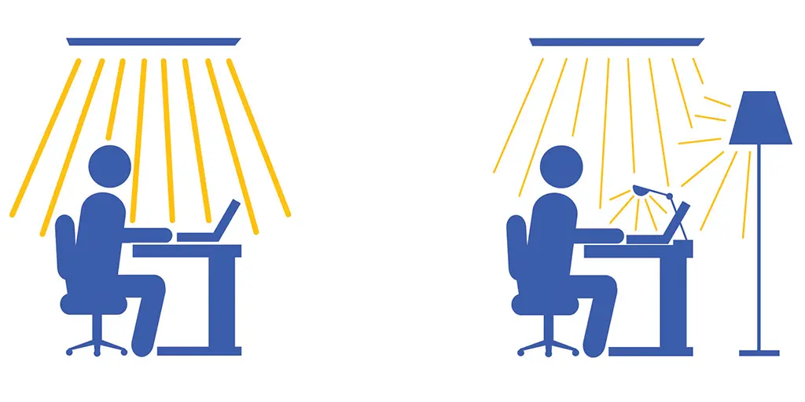

Clasificación de los factores
Factores de seguridad
Interacción entre el trabajador y su entorno físico, diseñados para evitar trastornos musculoesqueléticos y mejorar la comodidad.
Caídas de personas al mismo nivel y distinto nivel: Las caídas están condicionadas por el edificio y el espacio de trabajo, pasadizos mojados, escaleras sin barandillas, etc.
Golpes y choques:Causados por objetos mal colocados, espacios reducidos o mal diseñados.
Caída de objetos: Materiales o herramientas mal almacenadas, uso inadecuado del equipo o transporte del mismo.
Eléctrico:Principalmente se trabaja con aparatos electrónicos, causando que sea un factor de riesgos importante. Ejemplo: instalaciones defectuosas, uso de equipos electrónicos dañados o sin mantenimiento, contacto accidental con cables o circuitos, etc.
Incendio:Causado por un fallo eléctrico y se genere fuego,falta de extintores o sistema de detección de incendios, etc.



Factores de Psicosociales
Condiciones organizacionales y sociales que pueden afectar el bienestar emocional, psicológico y social del trabajador.
Estrés: Exceso de carga de trabajo o plazos irrealistas, falta de control sobre sus tareas, falta de apoyo por parte de compañeros o superiores.
Burnout: Es la principal herremienta, sin embargo, afecta a la seguridad y la salud visual de los trabajadores. Sino se hacen pasuas.
Acoso:Es una forma de violencia psicológica persistente en el entorno laboral, donde una o varias personas ejercen conductas hostiles hacia un trabajador, afectando su bienestar y desempeño.


Factores de Ergómicos
Interacción entre el trabajador y su entorno físico, diseñados para evitar trastornos musculoesqueléticos y mejorar la comodidad.
Manipulación manual de cargas:Cargas excesivamente pesadas, posturas inadecuadas al levantar o mover objetos.
Uso de pantallas: Es la principal herremienta, sin embargo, afecta a la seguridad y la salud visual de los trabajadores.
Trastornos musculoesqueléticos:Estar mucho tiempo sentado en una postura estática utilizando un ordenador causa que adoptes posturas forzadas,sobre todo el tronco el cuello y extremidades superiores.


Factores de Ambientales(exposiciones físicas)
Involucran las condiciones físicas del entorno laboral que pueden afectar la salud y el rendimiento.
Ruido:Es un sonido no deseado que puede ser molesto o dañino dependiendo de su intensidad, duración y frecuencia.
Iluminación: Un entorno con una iluminación o contraste inadecuado puede causar deslumbramientos o reflejos en la pantalla y como consecuencia el técnico adopta posturas forzadas y restringidas.

